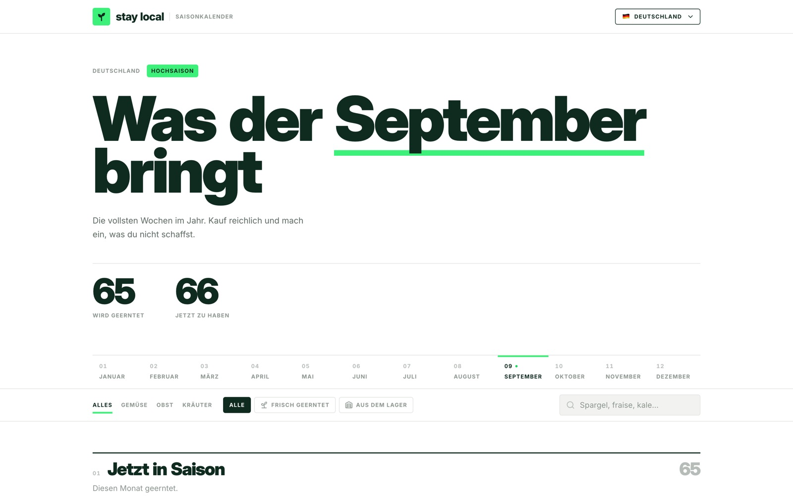
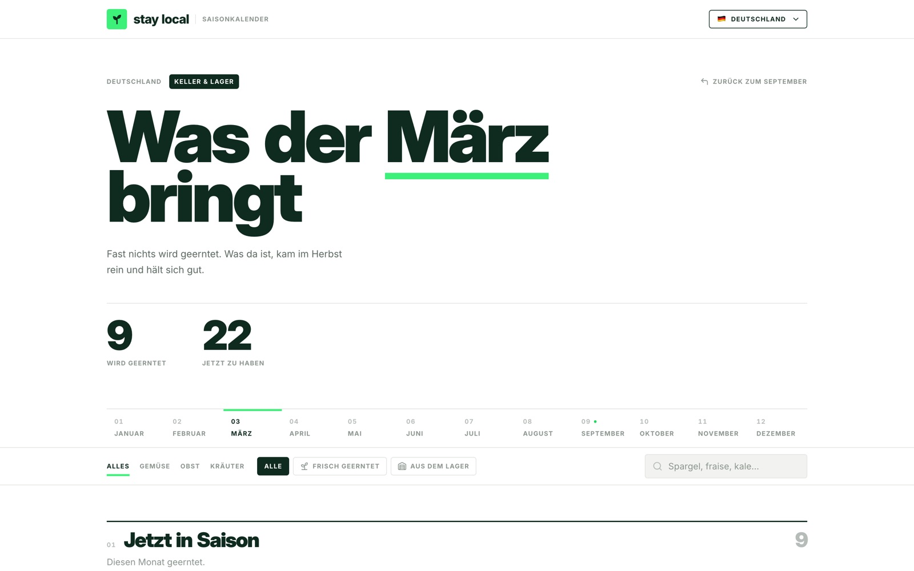
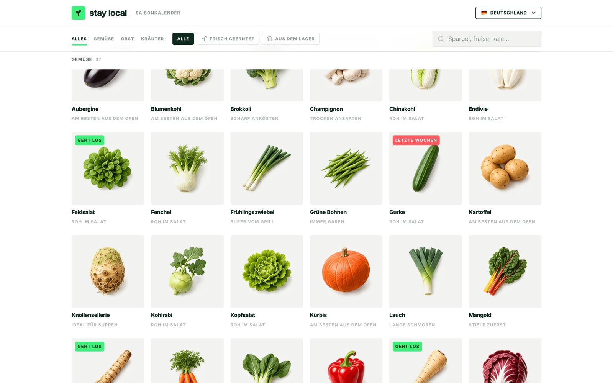

Side projects · 2026
Experiments
Two things I’m building at the moment: a seasonal produce almanac on the web, and an iOS app for German fuel prices. Both started as an excuse to find out what these tools can actually do when you point them at a real problem rather than a demo. Neither is client work.
Why this page exists
You only learn what a tool
is good for by building
something real with it.
There’s no shortage of writing about what AI can do for design work. None of it tells you where the tools get stuck, what they quietly get wrong, or how much of the job is still yours at the end. Building something does.
So I picked two problems I actually wanted solved and built them end to end: the data, the illustration, the interface, the deployment, the lot. No team, no brief, nobody to hand the hard part to.
Neither is trying to be a portfolio piece. What I’m after is a calibrated sense of where the tools earn their place and where they cost more than they save.
Both answers turned out to be the same thing approached from opposite directions. The output arrives faster than you can read it, so the work moves to deciding what to keep.
01 · Erntereif
A seasonal almanac where
every one of the 87 crops
was generated, not shot.
Pick a month and a country and it tells you what’s actually being harvested nearby, what has come out of cold store, and what the imported alternative costs in carbon. 87 crops, five countries, German interface.

September in Germany. 65 varieties being harvested, 66 available once cold store counts
The month switch is the part that earns the page. September is the fullest stretch of the year and it says so. March drops to nine things being harvested, and the copy changes with it: almost nothing is growing, and what’s there came in last autumn and keeps well. Most seasonal charts flatten the year into a grid of green bars. This one is willing to tell you it’s a bad month.

The same page in March. Nine harvested, 22 available, and a headline that admits it
One contact sheet, 87 cut-outs
The produce photography is the part worth talking about. All 87 images are generated and cut out on transparent ground, sliced from a single generated contact sheet, so the whole set shares one light, one camera angle and one white ground. That is the only reason they read as a series rather than as 87 stock photos with 87 different suns in them.

One light, one angle, one ground, across all 87
Before settling on the generated photographs I built two complete alternative sets: 87 flat vector illustrations, then 87 line-art tiles on saturated colour grounds. Both got finished, and both got thrown away.
Neither was a pile of drawings. Each was a system: a shape vocabulary, one lighting rule, one palette and 87 short recipes. Changing the light in one place changed all 87. That is what makes abandoning a direction cheap enough to be worth doing twice.
A direction is only cheap to abandon if the whole set regenerates from one rule.
Three things a glance missed
One input arrived as a 14.8 MB vector. It was a bitmap re-encoded as 220,532 one-pixel rectangles, with no geometry in it to work with at all. Inspect the input before you build on it.
The cut-outs are soft-alpha almost everywhere. One image has five fully opaque pixels out of 45,149, and the colour underneath still carries the near-white shadow it was generated with, so on any dark ground every item grows a grey halo.
A 10px label sitting at 2.97:1 contrast, and a grid where one long caption was quietly setting the row height for every card beside it.
The halo finding is why the layout is what it is. The produce keeps a light plate and the interface goes dark around it, rather than the other way round. None of that was visible by looking; it came out of reading the alpha channel.
a cooking note and a carbon figure
then thrown away
02 · Tanken
An app that knows
what it doesn’t know.
That was the hard part.
German filling stations have had to report their prices to the Bundeskartellamt since 2013, which makes fuel one of the few consumer markets with a live public price feed. Tanken reads it and answers a driver’s questions in the order they arrive: which grade, what it costs today, how it got there, which chain is cheapest, and only then whether tomorrow looks cheaper.
One screen, no tab bar. The reading order is the order of the questions.


The outlook is the hard part, and most of the engineering went into making it say less than it could. It scores nine signals, from pump-price trends and the weekday pattern to Brent, EUR/USD and the refining margin, each weighted by how directly it measures the thing being predicted.
One rule holds it together: a missing input has to lower confidence, never be replaced by a neutral guess. A feed the app can’t reach reports as absent, which shrinks coverage, pulls every probability back toward 50 per cent and, past a threshold, forces the amber “unclear” state. A fresh install says it hasn’t enough data rather than showing you a confident-looking coin flip.
A missing signal lowers confidence. It never gets quietly replaced by a plausible one.


Three things it refuses to do
The Bundeskartellamt reports document a regularity in the past, so that component returns a description and has no code path that can emit a likelihood. A test asserts the copy contains no predictive language. An earlier prototype had a probability card on it.
There is no national-average endpoint, so the app pools stations around eight cities and says so on screen rather than implying a census.
Imported history renders dashed, and a timeframe holding too few readings is offered dimmed and unselectable rather than being tapped into an apology.
how directly it measures the price
the app to one question
It builds and runs on iOS 27 and is verified end to end against the live feed. It isn’t shipped. Whether this use counts as non-commercial under Tankerkönig’s terms is unresolved, and that is the thing to settle before it goes anywhere.
So far
The useful work
was subtraction.
Both of these went faster than they would have by hand, and that is the least interesting thing about them. What the tools are reliably good at is mechanical breadth: 87 consistent cut-outs, five brand monograms, a licence-attribution path, a Dynamic Type pass. Work that is entirely knowable and entirely tedious.
What they won’t do is stop. They will hand you a probability card for a pattern that cannot support one, a national average drawn from eight cities, or a dark mode that puts a grey halo round every object on the page. Nothing in the output tells you which of those is a problem. You have to go and measure.
AI is fastest at producing a lot of something consistent. The work is making that output a system you can regenerate, and checking it with a measurement rather than a glance.
Two complete art sets thrown away. Two finished screens cut. A probability card removed. None of that is generation, and all of it is the reason either project is worth showing.
Enough tinkering →
Back to the real work